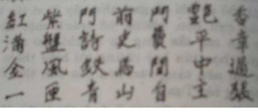
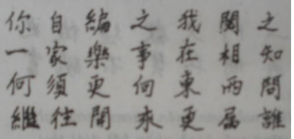
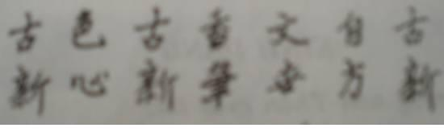
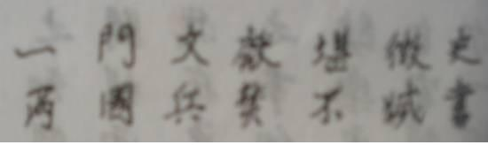

HUỲNH PHÚ SỔ BỊ THỦ TIÊU
Mùa xuân năm 1947 tôi qua Long Xuyên chỉ mang theo hai bộ đồ bà ba đen và hai trăm đồng, một là để coi tình hình, hai là để cân thuốc Bắc về làm một tễ thuốc. Tôi lại tá túc nhà cô Liệp.
Tôi tính ở Long Xuyên độ nửa tháng, không dè khi sắp về thì cả miền quê hương thầy Tư Hòa Hảo từ phía trên Chợ Mới xuống tới phía dưới Mĩ Luông, hai bên bờ Tiền Giang, tín đồ Hòa Hảo rất xôn xao, rục rịch nổi dậy, vì có tin thầy Tư bị thủ tiêu trong buổi họp đêm 16-4-47 ở địa phận làng Tân Phú, cách nhà bác tôi độ vài cây số. Huỳnh Phú Sổ quá tín, chỉ dắt theo bốn vệ sĩ nên bị hại. Tôi đã hỏi vài người bạn trong nhóm đồ đệ thân tín của thầy, họ bảo tất cả tín đồ đều tin rằng thầy khỏng thể chết được, thầy chỉ tạm lánh mặt trong một thời gian thôi rồi sẽ trở về. Họ dẫn vài câu thơ của thầy nói trước về vụ đó nữa. Tới nay họ vẫn còn nói như vậy. Họ cố bám vào một hi vọng hão huyền chăng?
Vậy là tôi không thể trở về Tân Thạnh được, phải tạm ở lại Long Xuyên vài tháng cho yên vụ đó đã, không dè tới trên sáu năm.
TÌNH HÌNH LONG XUYÊN
Những người ở thị xã Long Xuyên đã hồi cư về gần đủ, lại thêm có người ở nơi khác tản cư về đây, cho nên thị xã có vẻ phồn thịnh hơn trước. Một vài cơ quan chưa xây cất lại, nhưng nhà thường dân thì đã sửa sang. Đường phố đông đúc, nhất là ở bến tàu và chợ. Chưa có xe đò chạy Sài Gòn, vì đường chưa được yên, nhưng có tàu thủy, mỗi tuần vài chuyến, chuyến nào cũng đông hành khách và chở nhiều hàng hóa. Đặc biệt nhất là chợ có nhiều sạp vải, sạp nào cũng đắt hàng vì trong sáu, bảy năm chiến tranh dân thiếu vải nhất. Sữa, đường cũng nhiều. Mới chỉ có một tiệm thuốc Tây, nhưng thuốc Bắc thì có tới bốn năm tiệm.
Ít thấy Tây đi ở ngoài đường. Hầu hết các sở làm đều do người Việt điều khiển. Công chức đàn ông mặc đồ tây đi làm, còn đàn bà - ngay cả các cô giáo - cũng còn bận bà ba tới sở, tới trường. Không khí tương đối yên ổn. Lâu lâu mới có một lựu đạn nổ, phần nhiều là ở bên chợ vào ban đêm. Tối, nhà nào cũng đóng cửa sớm.
Xét chung, thì công chức hồi cư trở lại làm việc có vẻ hơi ngượng khi gặp những người như tôi bận bà ba, lết đôi guốc trên lề đường. Họ cũng rất muốn nước nhà độc lập, cũng muốn người Pháp về hết, nhưng chiến tranh kéo dài quá, họ không thể sống cực khổ trong đồng, trong bưng được, nên phải hồi cư. Về rồi, họ được truy lãnh những tháng lương từ khi họ tản cư, lại được làm việc với ông chủ Việt, đời sống như vậy rất dễ chịu, mà công việc lại chẳng có gì. Hầu hết nhà nào cũng có người thân còn đi kháng chiến, có người còn hoạt động kín trong châu thành nữa.
Ngay trong nhà tôi ở, cũng có hai thanh niên đều là cháu mà như con nuôi của cô Liệp theo kháng chiến, một đi bộ đội, một nằm vùng ở châu thành. Lại thêm một cháu xa làm liên lạc viên, tới xin ở nhờ. Một nữ sinh cũ cũng nằm vùng, lâu lâu tới cho tin tức hoặc quyên tiền.
Tôi đoán các nhà láng giềng nếu không biết rõ như vậy thì cũng nghi ngờ. Công an tỉnh cũng có thể biết nữa nhưng không làm gì lộ liễu quá thì họ để yên. Còn các công chức Việt quan trọng, chủ một sở chẳng hạn, thì nhắm mắt cho nhân viên giúp đỡ kháng chiến, miễn đừng để lụy cho họ thì thôi. Những nhân viên đó là cháu họ, con của bạn bè họ, hoặc hàng xóm của họ, mặt mũi nào mà tố cáo; vả lại tố cáo chỉ gây vạ cho bản thân họ thôi. Có thể nói, chỉ trừ một số rất ít Việt gian, còn tối đại đa số người
Ở Long Xuyên, tôi gặp ba người bạn cũ. Anh Hách, người cũng vào Sài Gòn với tôi để nhận việc ở sở Thủy lợi như tôi, anh cũng thôi việc công chính, không trở lại sở cũ, có một cái sạp bán vải ở chợ Long Xuyên. Người thứ nhì là một thầy họa đồ, trước giúp việc tôi ở sở Thủy lợi, tản cư về Lấp Vò rồi qua Long Xuyên mở một quán cóc bán tạp hóa, cũng bỏ luôn nghề cũ. Người thứ ba là ông Nguyễn Ngọc Thơ mà tôi đã gặp ở Mĩ Tho trên đường tản cư về Tân Thạnh. Ông lúc này làm chủ quận châu thành Long Xuyên. Thời Nhật, ông làm thư kí riêng của Toàn quyền Decoux; nhờ thông minh, lanh lợi, thạo việc, biết nhiều nhân vật ở Nam, giải quyết việc gì cũng mau mà lại liêm khiết, nên chính quyền nào cũng dùng ông. Tính giản dị, bình dân.
Tôi lại biết thêm được vài ông nữa: ông Paulus Hiếu chủ sở Kho bạc, ông Nguyễn Văn Hiếu chủ sở Địa chánh, một bác sĩ, một dược sĩ chủ nhà thuốc Tây, một điền chủ có Tú tài Pháp, một ông có cử nhân luật, tên là Kính, bạn cột chèo của anh Hách. Giới trí thức ở Long Xuyên đại khái có bấy nhiêu người.
TÔI DẠY TƯ TẠI NHÀ
Mới đầu tôi có ý định làm thử nghề Đông y, bắt mạch ra toa cho mấy người quen, làm vài tễ thuốc. Nhưng sau tôi thấy nghề đó khó sống nên thôi.
Mà muốn làm thầy lang thì phải có chân trong hội Đông y sĩ, phải làm đơn xin hành nghề “médicastre” nghĩa là nghề “lang băm”, gởi cho chủ tỉnh. Việc đó tôi cũng không thể làm được.
Lí do nữa: tôi tự xét chưa đủ kinh nghiệm làm một thầy lang kha khá.
Một hôm, ông Thơ thấy tôi ở không và không muốn trở về nghề công chánh, nhờ tôi kèm Pháp văn và Toán cho một đứa con trai của ông học lớp Nhất. Sau ông giới thiệu thêm một đứa cháu nữa. Từ đó hai ba ông Trưởng ti nữa dắt con lại nhờ dạy; từ hai trò lần lần đến tám trò, mỗi ngày dạy hai giờ, mỗi tháng được khoảng 1.000 đồng.
Vì ít học sinh nên tôi dạy kĩ, tùy theo tư chất của mỗi trẻ, nếu thông minh thì tôi thúc, bắt học nhiều, kém thông minh thì chỉ bắt buộc nhớ những điều cần thiết thôi. Cha mẹ học sinh thấy tôi siêng mà dạy rõ ràng, trẻ dễ hiểu, mau tấn tới nên càng tín cậy. Chỉ trong ba tháng tôi luyện Pháp văn và Toán cho hai đứa thi vào trường Trung học Cần Thơ, cả hai đều đậu.
Tôi nổi tiếng dạy giỏi và đầu niên học sau số học sinh xin học rất đông, tôi chỉ nhận hai chục em thôi, và mở thêm một lớp buổi chiều riêng cho chúng.
Tuổi trung bình của chúng là 14, 15. Đa số siêng, nhất là con gái; con trai ít cẩn thận. Cứ khoảng mười đứa có một đứa thông minh, sau có thể lên đại học được. Mà những đứa đó thường ở trong những gia đình trung lưu, cha làm thầy giáo, thầy kí. Em nào cũng lễ phép, dễ bảo, hồn nhiên, dễ thương.
Một hôm ông Thơ bảo đi ngang qua chợ, thấy một người chừng 30 tuổi bận đồ tây rách, ngồi ở lề đường, trước mặt để một miếng bìa với mấy hàng chữ tự xưng là con một đốc phủ sứ vì gia đình sa sút, nên xin những người hảo tâm giúp cho một vài đồng. Rồi ông tâm sự với tôi: “Tôi ngại làm cái nghề của tôi thất đức - lúc đó ông cũng là Đốc phủ sứ rồi. Con tôi, tôi chưa thấy đứa nào học được”.
Tuy ông làm chủ quận, sau làm tỉnh trưởng Long Xuyên mà đứa con ông học tôi, phải đi bộ, có hôm đi chân không, vừa đi vừa cạp một trái bắp nấu. Về điểm đó, tôi khen ông. Con trai tôi ở Sài Gòn, hồi đó, nghỉ hè về ở với tôi, tôi cũng cho sống như vậy.
HỌC HÀM THỤ
Có dư tiền tôi gởi mua sách ở Pháp: vài cuốn dạy tiếng Anh, bộ đĩa Linguaphone, một số sách Anh, Pháp về Culture humaine, và khá nhiều sách về văn học, giáo dục, tâm lý, khoa học, xã hội học… Sau mấy năm thiếu sách, lúc này tôi gặp sách nào cũng muốn mua. Tôi lựa những cuốn sách giới thiệu trong hai cuốn: Quels livres faut-il avoir lus? của A. Souché, La Bibliothèque de l’Honnêtre homme của một nhóm học giả ở Bỉ…
Mới đầu đọc lung tung rồi sau thấy vấn đề nào thích thì tôi mua thêm. Lần lần tôi hướng về giáo dục, về ngữ học, lịch sử văn học Trung Hoa, tiểu sử danh nhân, loại tự luyện đức trí (Culture humaine) môn tổ chức.
Nhân đọc một cuốn sách Pháp, tôi được biết năm 1926 người ta lập ở Paris một Uỷ hội quốc tế để nghiên cứu sự tổ chức công việc theo khoa học. Mỗi nước lập một Uỷ hội quốc gia nữa. Ở Pháp, Uỷ hội đó là Comité national de l’Organisation Française. Hội mở một trường dạy môn tổ chức công việc, lấy tên là École d’Organisation scientifique du travail, có lớp hàm thụ cho những người ở xa Paris.
Học phí khá cao. Tôi rủ anh Hách hùn tiền ghi tên học. Tôi yêu cầu trường gởi một lần hết các bài giảng và bài tập cho tôi. Mục đích của chúng tôi là học cho biết chứ không cần được bằng cấp của trường, vì muốn được bằng thì phải làm một luận án (mémoire) và qua Paris tự biện hộ (défendre: có người dịch là bảo vệ) cho chủ trương của mình trước mặt các giám khảo của trường. Như vậy bằng cấp được chính phủ Pháp công nhận, rất có giá trị.
Tôi học môn đó rất kĩ, mỗi bài dài chừng mươi, mười lăm trang lớn (khổ 21x31) chữ in, tôi đọc vài lần rồi tóm tắt đại ý trong một tập vở riêng. Mỗi bài thuộc về một đề tài, do một giáo sư giảng. Có giáo sư giảng về hai ba đề tài. Họ đề là những nhân viên quan trọng trong hành chính hay xí nghiệp, có nhiều kinh nghiệm. Mỗi ngày tôi bỏ ra một buổi để học, ba tháng thì hết khoá. Mới đầu tôi làm được vài bài tập gởi qua cho họ chấm; sau thôi, vì có bài muốn làm thì phải có tài liệu mà ở Long Xuyên tôi không thể kiếm được.
Tôi lại gởi mua những sách mà trường giới thiệu để nghiên cứu thêm.
Năm 1948 gia đình bác tôi ở Tân Thạnh tản cư qua Long Xuyên, ở nhờ nhà một người quen bên chợ. Như một chương trên tôi đã nói, quân đội Pháp đã rút đi từ 1946, bỏ các đồn ở Tân Thạnh và Tân Phú. Nhưng Ủy ban nhân dân miền
Cũng vào khoảng đó hay năm sau, nhà tôi thôi không làm ở tiệm may đường Sabourain nữa mà dạy học giúp cho một cô bạn có một trường tư nhỏ ở khu Bàn Cờ. Chỗ ở rất chật, phải kê bàn học sát nhau để nằm. Cháu đã vào trường Jean Jacques Rousseau (nay là trường Lê Quí Đôn), nhà tôi vừa dạy học vừa kèm cho nó.
Năm 1949 một viên kĩ sư người Việt đồng sự với tôi ở sở Thủy lợi trước kia, bấy giờ coi cả khu Công chánh miền Tây gồm 5, 6 tỉnh, ba lần mời tôi trở lại sở Công chánh, tôi đều từ chối.
DẠY TẠI TRƯỜNG THOẠI NGỌC HẦU
Tháng 11 năm sau, ông Thơ đã làm tỉnh trưởng Long Xuyên, và đã mở trường Trung học Thoại Ngọc Hầu ở thị xã, hai lần khẩn khoản mời tôi dạy thay ông Kính phải trở về bộ Tư pháp. Giữa niên học, không dễ gì kiếm được người thay, nên tôi vì tình bạn với cả hai ông ấy, nhận lời giúp với điều kiện là cuối niên khóa nếu tôi muốn thôi thì phải cho tôi thôi[1].
Tôi dạy Pháp văn, Việt văn, Đức dục, sau thêm cả Hán văn nữa ở nhiều lớp từ năm thứ Tư xuống tới năm thứ Nhì (bây giờ tương đương với 9, lớp 7). Tôi soạn bài kĩ, giảng cho rõ ràng, bắt học sinh làm nhiều bài tập, công bằng, thẳng thắn, dù con bạn thân mà làm biếng tôi cũng rầy, dù con các người tai mắt trong tỉnh, nếu lười tôi cũng mắng nặng lời. Mới đầu có vài phụ huynh phàn nàn với ông tỉnh trưởng Thơ về điều đó, ông Thơ không nói gì với tôi cả, nhưng rồi cũng tới tai tôi, tôi nổi giận, một hôm ở giữa lớp học, tôi bảo các học sinh:
“Các cháu về nói với ba má các cháu rằng tôi không hề xin vô làm giáo sư trường này đâu. Ông tỉnh tưởng khẩn khoản nhờ tôi hai ba lần tôi mới nhận lời dạy giúp với điều kiện là lúc nào tôi muốn thôi thì phải cho tôi thôi. Tôi quen sống thanh bạch rồi, ăn cơm rau quen rồi, không cần bơ sữa như kẻ khác đâu. Trò nào không muốn học tôi thì cứ đi ra khỏi lớp”.
Tôi ghét bọn con nhà giàu, sang mà làm biếng; rất yêu những thanh niên nghèo mà thông minh, siêng học. Tôi thường giúp đỡ hạng sau, hoặc cho tiền, cho sách; nghỉ hè tôi lại nhà họ chơi, dắt họ đi chơi.
Nhưng tôi có tật nóng tính, hễ giận thì la lớn nên học sinh sợ tôi, kính tôi chứ ít mến tôi. Năm nào tôi cũng đề nghị với hiệu trưởng cho mỗi lớp năm bảy học sinh ở lại vì sức non quá, nhưng hiệu trưởng không nghe, có lẽ vì không muốn làm mất lòng phụ huynh. Tôi bất mãn vì điểm đó lắm, bảo như vậy trái với qui tắc sư phạm, trái với cả cái lợi của học sinh vì học mà không hiểu thì đã mất thì giờ mà lại chán. Nhưng đa số phụ huynh học sinh hồi đó không cần con thi đậu, chỉ cần trong học bạ được ghi là học tới năm thứ Tư thôi; cho nên mỗi lớp năm Thứ tư Cao đẳng tiểu học Pháp Việt (chương trình Hoàng Xuân Hãn gọi là lớp Tứ niên, chương trình thời ông Diệm gọi là Đệ Tứ, cuối năm này học sinh thi lấy bằng Thành chung, sau gọi là bằng Trung học đệ nhất cấp, học hai năm nữa thi Tú Tài I) có đến bốn năm học sinh không viết được câu đúng văn phạm Pháp.
Tôi cho rằng trong nghề dạy học, tư cách ông thầy quan trọng nhất: phải đứng đắn, nhất là công bằng; rồi lời giảng phải sáng sủa, có mạch lạc, muốn vậy ăn nói phải lưu loát, và soạn bài phải kĩ.
Khi tôi rời Long Xuyên, tôi chắc có nhiều người không ưa tôi, nhưng không ai không trọng tư cách của tôi; và bây giờ các học sinh cũ của tôi - nhiều người theo kháng chiến, rồi làm cán bộ ở tỉnh - đối với tôi vẫn lễ phép, xưng con với tôi như hồi còn đi học, gặp tôi thường nhắc lại những câu tôi khuyên hồi còn ở trường.
Một người bảo đã lấy lời khuyên này của tôi làm chăm ngôn: “Về vật chất nên sống dưới mức trung, về bản tính thần nên trên mực trung”.
Một người khác bảo nhờ tôi khuyên “Bất cứ việc gì ở đời, làm hết sức mình đi rồi mặc cho hoá công định đoạt, đừng có tham vọng cướp quyền của hoá công”, mà vượt được nhiều nỗi khó khăn trong đời sống hàng ngày.
Bài giảng của tôi ngày nay chắc họ quên hết, nhưng những lời khuyên như trên, có thể nhiều người còn nhớ. Dạy ba năm ở Thoại Ngọc Hầu, mà non ba chục năm sau, bây giờ về Long Xuyên còn gặp được năm sáu trò cũ coi tôi như cha, có trò thân mật như người trong nhà; điều đó làm cho tuổi già của tôi được vui. Vợ sau của tôi dạy học ở Long Xuyên trên 35 năm, còn được nhiều cảm tình của học trò cũ hơn tôi. Mấy năm trước, cứ tới sinh nhật của nhà tôi, họ họp nhau chừng mươi người lại chúc thọ, đem thức ăn tới nấu nướng rồi già trẻ cùng ăn với nhau. Có vài người - đều là cô giáo - còn thân mật tới nỗi, ngày giỗ của bà nhạc tôi, cũng đến cúng như con cháu trong nhà vậy.
Cả vợ lẫn chồng được như vậy, tôi cho là một hạnh phúc lớn; từ xưa tới nay rất ít gia đình có được. Long Xuyên đúng là quê hương thứ hai của tôi, mà bây giờ tôi quyến luyến với nó hơn quê hương thứ nhất nhiều.
Trong giới phụ huynh học sinh ở Long Xuyên, tôi cũng được nhiều người kính nể. Một vị nói với một độc giả của tôi ở Phan thiết như sau: “Ông ấy - tức tôi - săn sóc sự học con em một cách công bằng, thận trọng, biết thích nghi với trẻ, đối với học sinh luôn luôn có thái độ ân cần, rộng rãi, hết lòng hướng dẫn chúng, sửa chữa chúng, giúp chúng thành những người biết tự trọng và trọng người”.
Lời khen đó, tôi không dám nhận hết.
NẾP SỐNG CỦA TÔI – CHỮ NHÀN VÀ ĐIỆU HÁT NÓI – CẢNH MIỀN TÂY
Trong những năm 1949-1953, tôi làm việc rất nhiều, vừa học vừa dạy học lại vừa viết sách. Hễ miệng thôi giảng thì tay cầm cuốn sách lên, đặt cuốn sách xuống thì lại cầm cây bút lên. Hấp tấp tới trường rồi hấp tấp về nhà. Mỗi tuần tôi chỉ nghỉ buổi chiều chủ nhật để qua khu chợ (cách nhà tôi khoảng 1 cây số), thăm bác tôi và một hai người bạn. Có người thấy vậy chê tôi: “Đi chơi mà cũng phải có ngày giờ nữa”. Tôi đáp: “Hồi đi học, chúng ta làm gì cũng có giờ, thì bây giờ ra đời, tại sao lại không giữ được thói quen đó. Tôi muốn làm một thư sinh suốt đời mà”. Bây giờ bảy chục tuổi tôi vẫn còn là một thư sinh, vẫn làm việc đều đều có giờ như xưa, và tôi cho đời thư sinh của tôi ba chục năm nay hoàn toàn tự do và độc lập, phong lưu nữa, thú gấp trăm đời những chính khách được hằng vạn người hoan hô nhiệt liệt năm trước mà năm sau đã bị đả đảo cũng nhiệt liệt, may thì trốn thoát ra nước ngoài, không may thì bị băm vằm không toàn thây. Tôi không muốn lên voi xuống chó, chỉ muốn đều đều ở mực trung. Tôi không muốn được thiên hạ hoan nghênh, chỉ muốn được một số bạn thân hiểu tôi, được một số học sinh quí mến, và một số độc giả trung thành, không thất vọng về tôi.
Trong gia đình, tôi muốn vợ con hiền lương, con học được và thích đọc sách chứ không ham sang giàu. Nhà ở tôi không muốn sang trọng, lộng lẫy, ít đồ đạc thôi nhưng nhiều sách. Chỗ làm việc phải rộng rãi, sáng sủa và trông ra một khu vườn có lá có hoa. Hoa thì tôi muốn loại dễ trồng mà có hương thơm, có bóng mát để chim chóc, ong bướm tới. Tôi ngại nhất loài hoa bắt người ta phải hầu hạ như hải đường, phong lan. Quần áo tôi muốn giản dị, dễ thay dễ giặt. Đi đâu mà phải bỏ ra mười lăm, hai mươi phút để thay quần áo, thắt cà vạt, xỏ giầy, tôi thấy bực mình. Ở xứ nóng như nước mình, bận bộ bà ba là tiện nhất, ra đường khoác thêm chiếc áo dài thì càng nhã, không cũng không sao, rồi xỏ chân vào đôi dép cao su, trước sau không mất quá một phút. Như tôi đã nói ở chương V, chỗ ở thì tôi muốn nửa quê, nửa tỉnh; công việc thì tôi muốn nửa viết lách, nửa làm vườn.
Nhàn là mục đích lí tưởng của nhân loại ở thời đại nông nghiệp. Văn minh Trung Hoa đã đề cao sự nhàn, tạo được những triết nhân, nghệ sĩ biết hưởng nhàn, ca tụng cái nhàn như Đào Uyên Minh, Tô Đông Pha…
Tôi thích bài Qui khứ lai từ của Đào Tiềm:
….”…Thăm vườn dạo thú hôm mai,
….Cửa dù có, vẫn then cài như không.
….Chống gậy dạo quanh vườn lại nghỉ,
….Ngắm cảnh trời khi ghé trông lên.
….Mây đùn mấy đám tự nhiên,
….Chim bay mỏi cánh đã quen lối về.
….Bóng chiều ngả bốn bề bát ngát,
….Quanh gốc tùng, tựa mát thảnh thơi.
….…
….Giàu sang đã chẳng thiết gì,
….Cung tiên chưa dễ hẹn gì lên chơi.
….Chi bằng lúc chiều trời êm ả,
….Việc điền viên vất vả mà vui.
….Lên cao hát một tiếng dài,
….Xuống dòng nước chảy ngâm vài bốn câu…”.
……………………………(Từ Long dịch)
Tôi thích bài Tiền Xích Bích phú của Tô Đông Pha, nhất là đoạn cuối:
“... Tự ở nơi biến đổi mà xem ra thì cuộc trời đất cũng chỉ ở trong một cái chớp mắt; tự ở nơi không biến đổi mà xem ra thì muôn vật cùng với ta đều không bao giờ hết cả... Vả lại ở trong trời đất, vật nào có chủ ấy, nếu không phải là của ta thì dẫu một li ta cũng không lấy. Chỉ có ngọn gió mát ở trên sông cùng vầng trăng sáng ở trong núi, tai ta nghe nên tiếng, mắt ta trông nên vẻ, lấy không ai cấm, dùng không bao giờ hết, đó là cái kho vô tận của tạo hóa mà là cái vui chung của bác với tôi”.
Trong văn học phương Tây tôi chưa gặp được bài nào vừa tao nhã vừa du dương như hai bài đó, nhưng phải đọc trong nguyên văn chữ Hán[2] mới thưởng được hết cái thú của nó.
Trong Việt văn, bài Hát nói Chữ nhàn của Bùi Kỉ có giọng ung dung, phơi phới nhất:
----”Đem hãn mặc[3] mài viên khối lỗi[4]
----Tìm yên hoa gỡ mối giang san,
----Dù ái ưu cũng có khi nhàn,
----Thì tiêu khiển trong cuộc rượu cung đàn chơi cũng nhã.
----Hãy gác vinh nhục thị phi cùng cổ kim nhân ngã,
----Đem hạo nhiên[5] mà hể hả với cầm tôn[6].
----Trộm cái “nhàn” trong túi kiền khôn,
----Dăm bảy vốc con con thôi cũng đủ.
----Thử tung ra cho nó: chảy cồn cồn như nước, tuôn cuồn cuộn như mây, bay lững thững như trăng, thổi thênh thênh như gió.
----Rải rác ra ngoài bát hoang trong lục vũ[7] vẫn còn thừa.
----Cái nhàn đã lạ lùng chưa?
-----------------(Nam Phong số 123, tháng 11, 1927)
Thể Hát nói là một biến thể của thể song thất lục bát, hoàn toàn Việt
Tôi chưa bao giờ được hưởng cái thú “đập trống”, nhưng được nghe ca được ít bài hát nói từ hồi thanh niên và lần đầu tôi đã thích liền. Giọng ca, đệm tiếng đàn đáy thưa thớt như uể oải, có vẻ ung dung lạ lùng, kéo dài ra, có chỗ ngưng lại khá lâu, bắt mình lắng tai đợi câu tiếp; có chỗ dồn dập một chút, đúng là “chảy cồn cồn như nước, tuôn cuồn cuộn như mây”, rồi lại ung dung tiếp tục.
Tôi nghĩ muốn thưởng thức hết cái thú của nhàn thì phải nghe điệu Hát nói, mà nghe trên một bờ liễu hoặc giữa một lòng rạch dưới ánh trăng, khi gió vi vu trên cành sao mà làng xóm bên bờ đã tắt đèn.
Có đào nương nào ca lên bài Chữ nhàn để tôi thâu băng, rồi những đêm khuya nằm trong chiếc võng dưới mái hiên, bên một dòng rạch nhỏ dưới vài gốc mận và xoài đương hoa, cho băng chạy nhè nhẹ đủ nghe thôi thì thú quá.
Bùi Kỉ đã vịnh chữ “Nhàn” rồi lại còn đề cao chữ “Lao”, “Hùng”. Tôi xin chép lại cả bài “Chữ Lao” dưới đây để ghi lại tâm trạng cụ:
----”Phàm vật hữu hình giai hữu hoại,
----Vỏ kiền khôn trút lại mấy từng tro.
----Tội gì mà lo tính quanh co,
----Thừa hơi sức để bày trò thân nhọc?
----Song đã là người, dù lớn nhỏ cũng linh kỳ chung dục[8].
----Chẳng có lẽ si si ngốc ngốc, chịu hồ đồ tranh trọc với cừ lư[9]
----Kìa thử xem kiến cõng mồi, chim nhặt rác, ong ủ mật, nhện xe tơ
----Vật còn thế, nỡ người ngu hơn vật?
----Nợ vũ trụ chồng chồng chất chất,
----Trốn làm sao, toan lẩn quất cho rồi.
----Đã xuất thân ngang dọc với đời,
----Quản chi nước mắt mồ hôi, bỏ cái tiếng nâng trời là hả.
----Nên chăng thì cưỡi gió đè mây, nắm nhật nguyệt vào trong chương bả[10].
----Chẳng nên thì vỡ bờ, sạt bến, cát dã tràng tơi tả tử tiếc gì công.
----Dẫu sao cũng nhất thế hùng!
--------------------- (Nam Phong số đã dẫn trên)
Tôi đã nhiều lần nói tới sự bận rộn của đời sống từ khi văn minh cơ giới thay văn minh nông nghiệp. Lần đầu trong bài Tựa cuốn Tố chức gia đình (P. Văn Tươi - 1953) về sự bận rộn của đời sống của con người.
“Văn minh cơ giới tặng cho mỗi người chúng ta 100 tên nô lệ (máy móc) mà chúng ta cực hơn cổ nhân vì chúng ta thành nô lệ của cơ giới, nhiều nhà bác học lo cho nhân loại sẽ bị diệt chủng vì cơ giới. Người ta tranh giành nhau tài nguyên, thị trường, dùng những khí giới mỗi ngày mỗi thêm khủng khiếp, tàn nhẫn để diệt nhau và bọn muỗi mắt như chúng ta sẽ bị hi sinh trước hết. Thật là văn minh, thì loài người không đề cao chữ “hùng”.
Tôi rất thích nhàn mà từ 1949 đến nay trên ba chục năm rồi, không năm nào được hưởng nhàn. Trong cuộc đời đã qua của tôi, nhớ lại chỉ có hai năm thật nhàn, thân nhàn mà tâm cũng nhàn, tức hai năm tôi lênh đênh trên những kinh rạch, tha hồ ngắm cảnh miền Tây: cảnh mặt trời mọc trên bờ biển Rạch Giá sau tấm màn lưa thưa của rặng bần mà có người ví với màn liễu – không đúng hẳn nhưng đẹp thì không kém; cảnh mặt trời đỏ như một mâm than hồng từ từ lận trên cánh đồng Sóc Trăng bát ngát; cảnh trăng cô liêu, lạnh lẽo, tĩnh mịch trên sông Cửu Long, hoặc nhảy múa trên những làn sóng ở rạch Bình Thủy; cảnh một đầm sen giữa Đồng Tháp Mười, chung quanh toàn là lau sậy; cảnh những rừng chàm đìu hiu ở miền U Minh, những rừng đước âm u ở Cà Mau. Rồi những vườn soài bông vàng phủ kín, hương hăng hắc mà mát, trái đong đưa trên cành, đi ngang qua tôi chỉ muốn đưa tay lên vuốt những má no tròn, mịn màng, ửng đỏ rủ xuống ở trên đầu tôi. Rồi những rặng bằng lăng dài hàng cây số, bông tựa như bích đào, cánh nhẹ hơn lụa lả tả bay trong gió và trôi theo dòng nước trong veo; những rặng dừa vừa yểu điệu vừa mạnh mẽ như thôn nữ miền Nam (Tây), tàu lá phe phẩy, lóng lánh dưới ánh vàng ban mai, thật lộng lẫy, tình tứ, “voluptueux” như Somerset Maugham nói. Buồng dừa nào cũng chi chít, chỉ nhìn thôi cũng đủ thấy mát và ngọt. Dừa đáng tượng trưng cho thiếu nữ đồng bằng Cửu Long. Còn thiếu nữa đồng bằng Nhị Hà có cây gì tượng trưng được không? Tôi không thấy. Vì vậy mà tôi yêu dừa. Nhưng dừa muốn thật đẹp thì phải ở bên một dòng nước, ở chỗ quang đãng đủ cho năm sáu cây phát triển, xoè tàn ra bốn bên, và thân cao khoảng 6-7 thước.
Câu “Trúc nên thưa, dừa nên cao” thật đúng, nó vươn được lên nền trời xanh mây trắng. Mọc chen chúc nhau như có lần tôi thấy ở Nha Trang thì nó làm sao phô hết duyên dáng được.
VIẾT SÁCH ĐỂ TỰ HỌC
Tôi đã lạc đề xa quá. Tôi nhắc lại: trong năm năm từ 1949 đến 1953, tôi làm việc rất nhiều, vừa dạy học, vừa học, vừa viết sách, không có thì giờ để hưởng nhàn. Dạy học thì mỗi tuần 16 hay 18 giờ thôi, không bận gì mấy. Học mới tốn thì giờ hơn. Tôi học môn tổ chức, học tiếng Anh, lại học thêm về văn học Trung Hoa nữa, nhờ có mấy bộ văn học sử mua được. Ngoài ra còn học các lớp hàm thụ: Cours d'édition et de librairie; Cours de technique littéraire; Institute Pelman. Những bài hàm thụ đều giúp cho tôi tài liệu để sau viết sách: Nghề viết văn, Hương sắc trong vườn văn, nhiều cuốn loại Học làm người.
Như trong chương XIII tôi đã nói muốn học một ngoại ngữ thì phải dịch. Tôi muốn học thêm về một môn nào thì nên viết về môn đó. Điều đó tôi đã trình bày trong cuốn Tự học, một nhu cầu của thời đại:
“Có người nói: khi chưa biết về một vấn đề nào thì người ta viết sách về vấn đề ấy”.
Nếu lời ấy là mỉa mai thì là mỉa mai một cách vô lí. Khi đọc bộ Nho giáo của Trần Trọng Kim hoặc bộ Lý Thường Kiệt của Hoàng Xuân Hãn, không ai tự hỏi hai học giả ấy trước khi viết sách đã biết rõ về đạo Khổng hoặc triều Lí chưa? Điều chúng ta đòi hỏi ở tác giả là tài liệu phải chính xác, lí luận phải vững vàng, văn phải sáng sủa và tươi nhã; còn tác giả phải học thêm nhiều trong khi soạn sách không thì ta không cần biết tới.
Vì có học giả nào không vừa học vừa viết? Trần Trọng Kim đâu phải là một nhà cựu học, Hoàng Xuân Hãn đâu có bằng thạc sĩ về sử học? Và trước khi soạn hai bộ ấy, họ Trần và họ Hoàng có lẽ cũng không biết gì nhiều về Khổng tử hoặc Lý Thường Kiệt hơn bạn và tôi, vậy mà tác phẩm của hai nhà ấy vẫn rất có giá trị.
Tôi muốn đổi câu dẫn trên ra như sau cho nó chứa một lời khuyên chí lí và nghiêm trang:
“KHI MUỐN HỌC VỀ MỘT VẤN ĐỀ NÀO THÌ CỨ VIẾT SÁCH VỀ VẤN ĐỀ ẤY”.
Chúng ta ai cũng có tính làm biếng, học cái gì cũng chỉ mới biết qua loa mà đã cho là mãn nguyện, không chịu suy nghĩ kĩ, tìm tòi thêm.
Nhưng khi viết sách, ta cần kiểm soát từng tài liệu, cân nhắc từng ý tưởng, rồi bình luận, sau cùng sắp đặt lại những điều ta đã tìm kiếm, hiểu biết để phô diễn cho rõ ràng. Trong khi làm những công việc ấy, ta nhận thấy có nhiều chỗ tư tưởng của ta còn mập mờ, ta phải tra cứu để hiểu thêm, đọc thêm nhiều sách nữa, do đó sự học của ta cao thêm một bực. Càng được nhiều sách thì càng gặp những ý tưởng mâu thuẫn nhau, và ta lại phải xem xét đâu là phải, đâu là trái và ta lại đào bới cho sâu thêm; nhờ vậy ta hiểu thấu triệt được vấn đề, nhớ lâu hơn, có khi phát huy được những điều mới lạ.
Cho nên muốn học một cách kĩ lưỡng không gì bằng viết sách về điều mình học. Viết sách là tự ra bài cho mình làm.
Học mà không làm bài thì chỉ là mới đọc qua chứ không phải học.
Song tôi xin dặn bạn: khi viết nên nhớ mục đích của ta là để tìm hiểu chứ không phải cầu danh. Đừng cầu danh thì danh sẽ tới. Cầu nó, nó sẽ trốn và sự học của ta cũng sẽ hoá ra nông nổi”.
Một anh bạn thân của tôi, học giả Lê Ngọc Trụ (mất năm 1979, nhà ngôn ngữ học có công nhất với chính tả Việt ngữ, tác giả cuốn Việt ngữ chánh tả tự vị, ngay khi cuốn Tự học của tôi vừa mới phát hành, một hôm gặp tôi ở Thư viện đường Gia Long, bảo tôi: “Lời anh nói rất đúng: chính tôi viết về chính tả Việt ngữ là để tự học đấy”.
Tôi nắm chặt tay anh, cười: “Anh em mình giống nhau quá. Tôi viết cuốn Tổ chức công việc theo khoa học cũng để tự học”.
LOẠI TỔ CHỨC CÔNG VIỆC
Học xong mỗi bài của trường Tổ chức công việc theo khoa học ở Paris gởi cho, tôi tóm tắt đại ý trong một tập vở rồi tôi lại đọc thêm những sách gởi mua từ Pháp về môn đó để bổ túc những bài học ấy, cũng ghi chép những ý chính. Được một hai tập 100 trang vở học trò.
Tôi sắp đặt lại hết những điều ghi chép ấy, chia thành chương, lập một bố cục, viết một cuốn về môn Tổ chức, chủ ý để hiểu rõ môn học và khi coi lại, đỡ mất thì giờ tìm trong một xấp dày tài liệu, bài giảng của trường và trong non một chục cuốn sách khác nữa.
Tôi viết kĩ lưỡng, sáng sủa, mạch lạc. Viết xong tôi thấy tập đó có ích cho giới trí thức Việt Nam vì rất ít người biết về môn tổ chức. Đọc nó đủ biết được những nguyên tắc quan trọng cùng cách thực hành; nó luyện cho ta được tinh thần khoa học, giúp ta làm việc mau hơn, có hiệu quả hơn mà đỡ tốn thì giờ, đỡ mệt sức. Mà nó lại dễ đọc hơn, dễ hiểu hơn sách Pháp. Nghĩ vậy tôi đem cho ông Paulus Hiếu, chủ sở Kho bạc Long Xuyên đọc. Ông thích nó, đề nghị với tôi để ông xuất bản giúp; ông sẽ bỏ tiền ra tìm nhà in ở Sài Gòn, in xong ông sẽ gởi cho một số tiệm sách ở Sài Gòn và Hà Nội, ông sẽ thu tiền, tóm lại là mọi công việc ông đảm đương hết, có lời sẽ chia hai. Ông thật là một người tốt, yêu văn hóa, nhờ ông mà tôi chính thức bước vào làng văn, công đó tôi không quên.
Cuốn đó in có 2.000 bản, phí tổn khá nặng vì phải làm nhiều Cliché (bản kẽm), ra mắt độc giả cuối năm 1949, hai năm sau bán hết, nhưng không lời bao nhiêu.
Đó là cuốn đầu tiên tôi ra mắt độc giả. May mắn nó được hoan nghênh liền. Một nhà giáo ở Long Xuyên bảo tôi: “Tôi mong có một cuốn như vậy từ lâu”.
Một độc giả ở Sài Gòn, nhà văn Thiên Giang, chưa hề quen biết tôi, đọc xong viết thư cho tôi, khen là viết sáng sủa, sách có ích, và bảo tôi sẽ thành công trong nghề cầm bút.
Ông giám đốc nhà xuất bản Phạm Văn Tươi ở Sài Gòn do có cuốn đó mà để ý đến tôi liền.
Tôi mừng rằng không là “mẻ” cái vốn của ông bạn P. Hiếu. Sau đó, tôi “khai thác” thêm môn tổ chức, áp dụng vào công việc hằng ngày, vào việc học, việc vặt trong nhà.
Tháng 11.1950, tôi nhận dạy cho trường Thoại Ngọc Hầu. Nguyên tắc của tôi là chỉ cho học sinh cách học, rồi hướng dẫn họ, để họ có thể tự học được. Điều đó rất quan trọng vì hết thảy các học sinh không biết cách ghi chép lời giảng của thầy, không biết cách học bài, làm bài, không biết cách học ôn, cách tìm tài liệu, không có một thời dụng biểu ở nhà. Họ không hiểu rằng cách học một bài ám đọc (récitation), khác cách học một bài toán; một bài sử, địa khác một bài sinh ngữ… Họ không có cả một sổ tay ghi những điều cần nhớ để thường coi lại.
Dạy được ba bốn tháng, tôi nghĩ công việc cần nhất là phải chỉ cho học sinh cách học đã, và ngày 29 tết âm lịch năm Tân Mão (tháng 2-1951) tôi khởi sự viết, mới đầu chỉ định viết 50 trang để toà hành chánh tỉnh quay ronéo chừng 100 bản phát cho học sinh. Nhưng khi đã hạ bút thì ý này gợi ý kia, vấn đề này kéo vấn đề khác và số trang rốt cuộc tăng lên gấp ba.
Tập đó tôi viết dễ dàng và vui, chỉ trong ba tháng là xong. Tôi áp dụng môn tổ chức vào việc học để cho đỡ phí sức, đỡ tốn thì giờ mà mau có kết quả; tôi dẫn nhiều kinh nghiệm bản thân từ hồi tôi học ở trường Yên Phụ và trường Bưởi. Trong phần I tôi đã nói tôi sớm có tinh thần phương pháp, ngay từ hồi học lớp Sơ đẳng (cours élémentaire), tôi đã có lối học riêng của tôi: ở trong lớp vừa chép bài vừa học thầm, vừa đi từ trường về nhà vừa nghĩ cách làm một bài toán, tìm ý cho một bài luận, rồi về tới nhà là làm, học ngay bài trong ngày, nhờ vậy tôi tốn rất ít thì giờ. Lên trung học, tôi có một sổ tay tóm tắt những ý quan trọng trong mỗi bài sử, địa, vật lí, hoá, toán…, những điều tôi cho rằng lúc nào cũng phải nhớ, như vậy khi học ôn để thi trong lớp hoặc thi ra trường, tôi chỉ cần coi lại những sổ tay đó, ít khi phải coi lại trong sách.
Những kinh nghiệm đó và nhiều kinh nghiệm khác nữa tôi đều chỉ lại cho học sinh.
Viết xong, thấy tập đó có thể in thành sách được, tôi đặt cho nó nhan đề Kim chỉ nam của học sinh. Lúc này tôi đã có được một số tiền tiết kiệm rồi, khỏi phải nhờ ông Hiếu nữa. Tôi mướn nhà in duy nhất ở Long Xuyên in cho 1.000 cuốn, tôi không nhớ phí tổn bao nhiêu (có lẽ là 3.000đ)[11]. Nhà in chỉ có máy đạp chân (pédale) in rất chậm, mà mỗi “cahier” chỉ được 4 hay 8 trang nhỏ, cho nên công in và khâu rất tốn mà mà sách rất xấu. Họ chỉ in các mẫu giấy tờ cho công sở và ít quảng cáo cho nhà buôn, chưa bao giờ in sách nên thiếu rất nhiều phương tiện.
Tôi bán được một số ít cho vài tiệm sách ở Long Xuyên còn thì gởi lên Sài Gòn cho nhà Phạm Văn Tươi. Ông Tươi chê sách in xấu quá nhưng khen nội dung có giá trị, bán trong mấy tháng đã hết, và xin tôi cho phép tái bản. Cuốn đó bán chạy hơn cuốn Voulez vous que vos enfants soient de bons élèvres của giáo sư La Varenne, Thiên Giang lược dịch, nhan đề là Muốn thành học sinh giỏi, cũng do nhà P. Văn Tươi xuất bản, ra trước cuốn của tôi chừng một năm, không hề tái bản.
Kim chỉ nam của học sinh rất được hoan nghênh. Nhiều phụ huynh học sinh sau gặp tôi, cảm ơn tôi vì nhờ cuốn đó mà con họ tấn tới. Một giáo sư bảo học trò: “Nếu theo đúng cuốn đó thì học rất giỏi, nhưng ít người theo đúng được lắm”. Cần gì phải theo đúng. Cứ hiểu nguyên tắc, hiểu phương pháp rồi chịu khó áp dụng tuỳ khả năng, hoàn cảnh của mỗi người, cũng đủ có lợi nhiều rồi.
Tôi mừng nhất là nó đã thay đổi hẳn cuộc đời của một thanh niên hiếu học nhưng nhà nghèo, không cách nào tiến thân, sau thành một bác sĩ, một nhà văn, trước 1975 đã ra được một hai tập thơ, hai cuốn dạy cách đề phòng các bệnh của thiếu nhi và của học sinh. Trong tờ Bách Khoa số 20-4-75, thanh niên đó, bác sĩ Đỗ Hồng Ngọc viết: Kim chỉ nam đã mở cho tôi chân trời mới, đọc xong, tôi thấy gần gũi với ông - (tức tôi) - kỳ lạ. Có những điều tôi đã thoáng nghĩ, đã từng làm nhưng vì thối chí ngã lòng, vì không được hướng dẫn nên không đạt được mấy kết quả. Ông đã hệ thống hoá, đặt ra những nguyên tắc giúp cho việc học đỡ mệt, đỡ tốn thì giờ mà được nhiều kết quả hơn. Điều quan trọng là sách trình bày những phương pháp thực hành, không có những lý thuyết viễn vông, nhàm chán”.
Thanh niên đó từ mười năm nay đã thành một bạn thân của tôi.
Kim chỉ nam của học sinh được tái bản bốn năm lần, lần nào cũng in ba ngàn bản.
Sau Kim chỉ nam, cũng trong loại tổ chức, tôi viết cuốn Tổ chức công việc gia đình (1953), chỉ cách tổ chức công việc trong nhà, dự tính, sắp đặt, chỉ huy, cư xử với người giúp việc…
Nhưng sách của tôi khác những sách trong loại đó của Âu, Mĩ ở điểm tôi đề cao nếp sống giản dị, đừng để “cái hình hài làm tội cái tâm” mà “đời sống vật chất thì nên dưới mức trung, còn đời sống tinh thần nên trên mức ấy” - cuốn đó được tái bản hai ba lần.
Lại mười năm sau (1964), tôi mới viết một cuốn nữa về cách Tổ chức công việc làm ăn. Cũng vẫn áp dụng những nguyên tác tổ chức theo khoa học, nhưng cuốn này tôi chỉ in được một hai lần, mỗi làn in 2.000 bản. Thời đó giới kinh doanh không cần biết môn tổ chức. Họ chỉ cần chạy chọt, xin được cái “lít xăng” (licence: giấy phép) xuất nhập cảng, vay ngân hàng một số vốn để “khai thác” là đủ làm giàu. Có kẻ chỉ cần bán lại “licence” cũng đủ sống phong lưu. Trong cái việc đấu thầu, hễ “quen lớn”, có phe cánh là lãnh được những lô “bở”. Không biết tới cuối thế kỷ này người mình đã có được tinh thần “làm ăn” như phương Tây chưa. Cuốn đó của tôi ra sớm quá.
Ngay cuốn Tổ chức công việc theo khoa học mặc dầu in trước sau ba lần, mỗi lần 2.000 bản, cũng vẫn “được ra sớm quá”. Hiện nay (1980) từ Nam ra Bắc vẫn còn rất nhiều cơ quan không biết cách quản lí, tổ chức, làm việc luộm thuộm như tổng lí, hương chức thời tiền chiến. Mà ở phương Tây thì khoa tổ chức của Taylor, Fayol đã bị coi là lạc hậu từ hai chục năm nay rồi. Ngày nay họ tìm cách thích ứng công việc với người chứ không thích ứng người với công việc; tập cho thợ có sáng kiến, tự lãnh trách nhiệm, giúp cho thợ tự giải quyết lấy các vấn đề... Rồi đây các máy điện tử (Ordinateur[12]) sẽ làm thay đổi hẳn cách quản lí nữa; sự quyết định sẽ không tập trung vào ban giám đốc mà phân tán cho các phòng, xưởng, nghĩa là cho cấp dưới.
Chỉ một khoá hàm thụ mà giúp tôi viết bốn cuốn như trên.
Để giúp học sinh có phương pháp, sau tôi còn dịch và viết mấy cuốn nữa - có thể coi như thuộc về loại tổ chức - như:
Muốn giỏi toán hình học phẳng (dịch J. Chauvel) - 1954.
Muốn giỏi toán hình học không gian (n.t) - 1956.
Muốn giỏi toán đại số (tôi viết) - 1957.
Bí quyết thi đậu - 1955.
Mấy cuốn đó đều viết theo tinh thần cuốn Kim chỉ nam, tinh thần giúp đỡ thanh niên, giúp họ nhớ rằng cần nhất là có phương pháp, có chủ đích, làm việc đều đều. Trong đời có nhiều người rất thông minh mà thiếu những đức đó nên không làm được gì cả; trái lại có những người thông minh chỉ trên trung bình một chút thôi mà lập được sự nghiệp nhờ những đức đó.
Một số độc giả quá yêu tôi, bảo giá tôi đừng viết những cuốn đó mà khảo cứu về những đề tài cao xa thì có lợi hơn. Phải, có thể có lợi cho tôi hơn về kiến thức, nhưng chắc là ít lợi cho thanh niên. Không thấy ai viết sách dạy phương pháp làm việc cho học sinh thì tôi phải viết. Và học sinh thấy có ích nên cuốn nào cũng được tái bản nhiều lần. Trong 30 năm cầm bút, tôi bỏ ra hơn một năm giúp đỡ học sinh như vậy, tôi nghĩ không phải là phí thì giờ.
LOẠI VỀ VIỆT NGỮ
Vì dạy Việt ngữ cho lớp đệ tứ niên, tôi phải đọc kĩ cuốn Văn phạm Việt Nam của Trần Trọng Kim và vài cuốn như Nhận xét về văn phạm Việt Nam của Bùi Đức Tịnh… Đọc xong tôi thấy những sách văn phạm (nay gọi là ngữ pháp) đó, nhất là cuốn của Trần Trọng Kim phỏng theo ngữ pháp của Pháp quá, không hợp với đặc tính của tiếng Việt. Tôi lại thấy tất cả các giáo sư và học sinh đều miễn cưỡng dạy và học môn đó – vì nó có trong chương trình - chứ không tin tưởng, không thấy ích lợi chút nào cả. Và tôi viết cuốn Để hiểu văn phạm, đưa ra vài ý kiến, mặc dầu tôi chưa hề nghiên cứu về ngữ pháp.
Đại ý tôi cho rằng Việt ngữ không có phần từ pháp (morphologie), không biến di tự dạng (cùng một từ dùng làm danh từ, động từ thì viết cũng vậy: cái cuốc, cuốc đất), cho nên nhiều từ không có từ loại nhất định; ta không nên chú trọng quá đến việc phân biệt từ loại, mà nên chú trọng đến sự phân biệt từ vụ, đến vị trí của mỗi từ trong câu.
Tôi lại đề nghị không nên dùng gạch nối, vì Việt ngữ có tính cách đơn âm (ngày nay, người ta gọi là ngôn ngữ cách thể - langue isolante), rất khó để gạch nối cách nào cho hoàn toàn hữu lí được lắm, mà chỉ làm rối trí thêm cho học sinh. Viết liền những từ ghép, lại càng không nên.
Tập đó dày khoảng hơn trăm trang, tôi viết trong hai tháng, ngoài những giờ dạy học. Nhà P. Văn Tươi không nhận xuất bản vì khó bán. Tôi đề nghị bỏ vốn ra in một ngàn (hay một ngàn rưỡi) bản và để cho họ độc quyền phát hành (nhà P. Văn Tươi đứng tên), bán được bao nhiêu, trừ hoa hồng rồi còn thì về phần tôi. Lợi về vật chất không có gì nhưng về tinh thần thì đáng kể. Chính nhờ cuốn đó mà mấy năm sau, ông Trương Văn Chình (bút hiệu Trình Quốc Quang, tác giả hai cuốn Hội nghị Đà Lạt, Hội nghị Fontainbleau) ở Hà Nội di cư vô, lại đường Monceau kiếm tôi, đề nghị với tôi viết chung về ngữ pháp Việt Nam vì chủ trương của tôi có nhiều điểm hợp với ông. Rồi hơn hai chục năm sau, miền Nam giải phóng rồi, một số học giả trong viện Khoa học Xã hội (ban Ngôn ngữ) ở Bắc vô cũng lại thăm tôi, bảo họ để ý đến tôi từ khi đọc cuốn đó. Nó được chú ý như vậy vì là cuốn đầu tiên vạch một hướng mới cho công việc nghiên cứu ngữ pháp Việt, thoát li ảnh hưởng của các sách ngữ pháp Pháp dùng trong các trường học.
Cũng vì dạy Việt văn, nên tôi có ý viết một cuốn chỉ cho học sinh trung học và những người lớn tự học cách viết văn và sửa văn, nhan đề là Luyện văn.
Để viết cuốn này, tôi đọc khá nhiều tác phẩm văn chương Việt, Pháp, và một số sách Pháp về nghệ thuật viết như cuốn L’Art d’écrire của Antoine Albalat, La Formation du style của tu viện trưởng Moreux, Le style au microscope (ba cuốn) của Criticus…
Không kể thì giờ đọc sách và thu thập tài liệu để dẫn chứng, chỉ nội công việc viết kĩ ba trăm trang cũng mất sáu tháng làm việc từ bảy giờ sáng đến bảy giờ tối, trừ những giờ dạy học, chấm bài, giờ ăn và ngủ trưa. Nhưng tôi không thấy mệt vì viết rất có hứng.
Viết xong cuối năm 1952, nhà P. Văn Tươi in ngay, sau tái bản được hai ba lần. Sách in ra đúng lúc Việt ngữ được trọng dụng, ai cũng thấy cần nói và viết tiếng Việt cho đúng, cho hay, còn tiếng Pháp chỉ là một ngoại ngữ ở các trường trung học, cho nên được độc giả hoan nghênh, cho là “gia đình nào cũng phải có”; có vị còn khuyến khích tôi, buộc tôi viết thêm nữa: “ông Lê, ông phải soạn ngay một cuốn Luyện văn thứ nhì và phải xuất bản gấp nội trong ba tháng, không được trễ, để hè này tôi có sách đọc mà quên cái nắng nung người đi nhé. Vấn đề còn rộng, ông chưa xét hết và ông không được từ chối”.
Tôi không từ chối, nhưng còn bận nhiều việc khác, nên năm 1956 tôi mới viết được cuốn II, 1957 mới ra nốt cuốn III. Hai cuốn này cao hơn cuốn I nên chỉ in được một lần thôi.
DỊCH DALE CARNEGIE VÀ VIẾT LOẠI SÁCH HỌC LÀM NGƯỜI
Để học tiếng Anh, tôi tập dịch sách Anh ra tiếng Việt cũng như trước kia để học bạch thoại, tôi dịch Hồ Thích.
Thật may mắn, ông P. Hiếu giới thiệu cho tôi hai cuốn How to win friends and influence people và How to stop worrying đều của Dale Carnegie và kiếm cho tôi được cả nguyên bản tiếng Mĩ với bản dịch ra tiếng Pháp.
Hai cuốn đó cực kỳ hấp dẫn, tôi say mê đọc, biết được một lối viết mới, một lối dạy học mới, toàn bằng thuật kể chuyển. Mỗi chương dài từ 10 đến 20 trang, chỉ đưa ra một chân lí, một lời khuyên; và để cho người đọc tin chân lí, lời khuyên đó, Carnegie kể cả chục câu chuyện có thực, do ông nghe thấy hoặc đọc được trong sách báo, nhiều khi là kinh nghiệm bản thân của ông nữa, kể bằng một giọng rất có duyên, cho nên đọc thích hơn tiểu thuyết mà lại dễ nhớ.
Tiếng Anh của tôi hồi đó còn non lắm – thực sự thì cũng chỉ kể như mới học sáu tháng - nên nhiều chỗ tôi phải dựa vào bản dịch tiếng Pháp. Và dịch cuốn How to win friends xong, tôi đưa ông Hiếu coi lại, sửa chữa. Do đó mà chúng tôi kí tên chung với nhau. Tôi đặt cho nhan đề là Đắc nhân tâm.
Chủ trương của tôi là dịch loại sách “Học làm người” như hai cuốn đó thì chỉ nên dịch thoát, có thể cắt bớt, tóm tắt, sửa đổi một chút cho thích hợp với người mình miễn là không phản ý tác giả; nhờ vậy mà bản dịch của chúng tôi rất lưu loát, không có “dấu vết dịch”, độc giả rất thích.
Cuốn Đắc nhân tâm bán rất chạy, từ 1951 đến 1975, in đi in lại tới 15-16 lần, tổng cộng số bán được trên 50.000 bản[13]. Có người mua trước sau ba bốn bản hoặc vì mất, hoặc để tặng bạn.
50.000 bản ở nước mình là nhiều thật, nhưng không thấm vào đâu với Âu, Mĩ. Ở Pháp, nhà Hachette lần đầu in 200.000 bản dịch, nhan đề là Comment se faire des amis; còn ở Mĩ thì không biết tới mấy triệu bản. Hiện nay (7-1980) ở chợ sách cũ, đường Cá Hấp (Bùi Quang Chiêu cũ) - Sài Gòn có người chịu mua một bản với giá 40 đồng ngân hàng (20.000đ cũ). Năm 1975 giá chỉ có 2 đồng ngân hàng.
Qui tắc đắc nhân tâm gồm trong câu “Kỷ sở bất dục vật thi ư nhân”[14] mà tất cả các triết gia thời thượng cổ từ Thích Ca, Khổng Tử, Ki Tô… đều đã dạy nhân loại, nhưng trình bày như Dale Carnegie thì hơi có tính cách vị lợi, và tôi nghĩ trong đời cũng có một đôi khi chúng ta cũng cần phải tỏ thái độ một cách cương quyết chứ không thể lúc nào cũng giữ nụ cười trên môi được. Cho nên tôi thích cuốn How to stop worrying mà chúng tôi dịch là Quẳng gánh lo đi hơn.
Đúng như Đoàn Như Khuê nói:
-------------… Thuyền ai ngược gió ai xuôi gió,
-------------Coi lại cùng trong bể thảm[15] thôi.
Dù sang hèn, giàu nghèo, ai cũng có ưu tư, phiền muộn; chỉ hạng đạt quan, triết nhân, quân tử mới “thản đãng đãng” (thản nhiên, vui vẻ) được như Khổng Tử nói (Luận ngữ - Thuật nhi – 36). Nhưng làm sao để có thể thản nhiên, vui vẻ thì Khổng Tử không chỉ cho ta biết. Dale Carnegie bỏ ra bảy năm nghiên cứu hết các triết gia cổ kim đông tây, đọc hàng trăm tiểu sử, phỏng vấn hàng trăm đồng bào của ông để viết cuốn Quẳng gánh lo đi.
Tôi bắt đầu đau bao tử từ khi phi cơ Pháp bắn liên thanh xuống miền Tân Thạnh (1946), năm sau qua Long Xuyên, để quên tình cảnh nước và nhà tôi phải trốn vào trong sách vở, nhưng đọc và viết suốt ngày thì bệnh bao tử lại nặng thêm, mà bác sĩ không biết, cứ cho là gan yếu, uống thuốc Tây, thuốc Bắc, thuốc Nam đều không hết.
Rồi khi đọc cuốn Quẳng gánh lo đi, tôi thấy hết ưu tư, nhẹ hẳn người đi. Suốt thời gian dịch và trong năm sáu tháng sau nữa, tôi có cảm giác “đãng đãng” đó. Vì vậy mà tôi rất mang ơn tác giả, viết một bài Tựa tôi tự lấy làm đắc ý để giới thiệu với độc giả, và cuối bài, đề:
“Long Xuyên, một ngày đẹp trong 365 ngày đẹp năm 1951”
Nhiều độc giả đồng ý với tôi là cuốn đó hay hơn Đắc nhân tâm, và ngay từ chương đầu đã trút được một phần nỗi lo rồi, cho nên chép nhan đề chương đó “Đắc nhất nhật quá nhất nhật” để trước mặt, trên bàn viết.
Mới đây, một độc giả, bác sĩ, bảo từ hồi đi học, đọc xong chương đó, thì đổi chữ kí, không kí tên thật nữa mà kí là “Today” (Hôm nay). Tôi còn giữ một bản có chữ kí đó của ông ta.
Quẳng gánh lo đi trước sau chỉ bán được độ ba chục ngàn bản, nhưng tôi chắc nó đã đem lại niềm vui cho ít nhất là của trăm ngàn người. Nó ra rất đúng lúc chiến tranh gây biết bao nỗi lo lắng cho biết bao gia đình!
Cũng trong năm 1951, tôi dịch thêm cuốn tiếng Anh nữa: Give yourself a chance (The Seven steps to success) của Gordon Byron. Nhan đề tiếng Việt của tôi: Bảy bước đến thành công.
Cuốn này nhà P. Văn Tươi cũng cho vào loại “Học làm người”, ích lợi cho thanh niên, gọn, sáng, dễ theo, nhưng không có gì đặc biệt. Có lẽ vì nhan đề hấp dẫn nên cũng được tái bản nhiều lần, tuy thua xa hai cuốn trên.
Ngoài ra tôi viết xong nhưng chưa sửa mấy cuốn này:
+ Nghệ thuật nói trước công chúng: tài liệu đa số lấy trong cuốn Public Speaking của Dale Carnegie mà tôi cho là tác phẩm thực tiễn nhất trong loại. Phần phụ lục có vài bài diễn văn rất hấp dẫn. Sách bán rất chạy, tới nay vẫn còn người tìm mua.
+ Thế hệ ngày mai: tôi tổng hợp các phương pháp tân giáo dục của phương Tây để tìm ra một đường lối mới trong việc dạy trẻ. Bài Tựa rất cảm động (cuối chương XI, tôi trích dẫn một đoạn). Tác phẩm được tái bản nhiều lần. Thiên Giang đọc xong, trở nên thân với tôi. Nhờ cuốn Kim chỉ nam của học sinh và cuốn đó mà giới hiệu trưởng, giáo sư tư thục để ý tới tôi.
+ Hiệu năng: bí quyết của thành công: trong loại Doanh nghiệp của nhà P. Văn Tươi.
+ Bí mật dầu lửa: dịch cuốn Le Secret de l’or noir của Robert Gaillard, kể vụ tìm ra mỏ dầu lửa đầu tiên ở Mĩ. Truyện có tính cách mạo hiểm, cho trẻ em đọc. Trên 15 năm sau, cuốn đó mới xuất bản[16].
VIẾT VỀ VĂN HỌC TRUNG QUỐC
Công trình mệt cho tôi nhất – mệt mà thú – hồi tản cư ở Long Xuyên nhất là viết bộ Đại cương văn học sử Trung Quốc gồm ba cuốn: I. Từ thượng cổ đến đời Tuỳ; II. Đời Đường; III. Từ Ngũ đại đến hiện đại.
Viết bộ đó chủ ý của tôi cũng là để tự học. Trong bài Tựa - mà tôi lấy làm đắc ý - tôi nói hồi ở trường Bưởi tôi đã tò mò muốn biết về văn học Trung Quốc. Nền cổ học Trung Quốc như có sức gì huyền bí thu hút tôi, một thanh niên theo Tây học. Mỗi lần nghe đúng tên như Văn tâm điêu long, Chiêu Minh văn tuyển, Tiền Xích Bích phú, Qui khứ lai từ… dù chẳng hiểu nghĩa, tôi cũng thấy trong lòng vang lên một điệu trầm trầm, như nhớ nhung cái gì. Phải chăng đó là tiếng vang những giọng ngâm nga của tổ tiên tôi còn văng vẳng trong lòng tôi?
Muốn tìm hiểu văn học Trung Quốc mà sách báo Việt chỉ làm cho tôi thất vọng. Cuốn Việt Hán văn khảo của Phan Kế Bính sơ lược quá; còn đọc những bài dịch Cổ văn, thơ Đường đăng lác đác trên tạp chí Nam Phong và một số báo khác thì không khác gì coi mấy bông sói, bông hồng, bông ngâu, bông móng rồng mà mấy chị bán hoa ở phố Hàng Đường (Hà Nội) gói trong chiếc lá chuối, chứa trong cái thúng để bán cho các bà nội trợ mua về cúng rằm, làm sao biết được vườn làng Ngọc Hà, làng Yên Phụ ra sao.
Tôi chỉ còn cách học chữ Hán để đọc sách của người Trung Hoa viết. Khi đã có một số vốn độ 3.000 chữ, đủ để mò trong các tự điển Trung Quốc, tôi kiếm mua mấy bộ Cổ văn, Đường thi, Văn học sử, Bạch thoại văn học sử, Trung Quốc văn học tư trào sử lược… như tôi đã nói (chương XIII), rồi mò mẫm lần. Thật khó nhọc vô cùng! Đọc một bài trong Cổ văn quan chỉ dài độ hai mươi hàng, tôi thường mất cả buổi mà chỉ hiểu lờ mờ. Bộ ấy chú thích rõ ràng, và có dịch cổ văn ra bạch thoại; nhưng cổ văn và bạch thoại của tôi đều ở mức sơ đẳng, phải dùng cổ văn để đoán bạch thoại và ngược lại dùng bạch thoại để đoán cổ văn.
Còn những cuốn Văn học sử thì tuyệt nhiên không có chú thích, nhiều chỗ tôi phải viết thư hỏi bác tôi, nhưng không dám hỏi nhiều vì mất công bác viết thư trả lời. Đành đọc nhiều sách, nhiều lần rồi vỡ nghĩa dần.
Học tới đâu tôi tóm tắt, ghi tới đấy, so sánh các sách, sắp đặt rồi chép trong những tập vở 100 trang. Sau cùng dịch một số bài văn thơ, viết thành chương. Nội công việc dịch và viết này cũng mất chín, mười tháng. Các bài cổ văn thì tôi dịch lấy, thơ tôi dịch được một số, bác tôi dịch cho một số lớn. Bài thơ nào không đề tên người dịch là của tôi, đề “Vô danh dịch” là của bác tôi. Hai bác cháu đều chú trọng nhất tới đức “tín”, nghĩa là dịch sao cho đúng, cho sát, không dám sửa lời, thêm ý. Chúng tôi biết nhiều bài người trước đã dịch rồi mà hay, nhưng vì ở Long Xuyên thiếu sách, tôi không thể kiếm được, nên không dẫn vô.
Tôi viết như vậy cốt để học, chứ không nghĩ đến việc in. Viết xong, thấy có thể giúp cho các bạn hiếu học có một khái niệm về văn học Trung Quốc nên mới sửa lại rồi cho xuất bản. Sự nhận định của tôi chắc không sai nhiều vì tôi đã tham khảo kĩ, bằng những phương tiện tôi có; bố cục có mạch lạc và sáng sủa; nhưng tôi nhận rằng còn những lỗi dịch sai, nhất là phiên âm sai, mặc dầu vậy tôi cũng cứ cho ra mắt độc giả. Sở dĩ “tôi cả gan như vậy là vì tin lòng quảng đại của các vị cựu học, không nỡ trách kẻ hậu tiến học thức nông cạn mà sẵn lòng hạ cố chỉ bảo cho những chỗ sai lầm, hầu giúp bọn tân học chúng tôi hiểu thêm cái cổ học của các cụ, tức là cái nền tảng văn hóa dân tộc Việt Nam chúng ta” (trích trong bài Tựa).
Văn học Trung Quốc ảnh hưởng rất lớn đến văn học Việt Nam mà các cụ quá khiêm tốn không chịu viết thì bọn xẩm như tôi đành phải mò kim vậy.
Viết xong tôi chép lại, khoảng 750 trang, mất ba tháng nữa (vì có nhiều chữ Hán và bài nào cũng có phần phiên âm).
Ngày 20 tháng mạnh đông năm Quý Tị (26-XI-1953), mọi công việc hoàn thành, tôi thấy khoan khoái. Tôi thảo bài Tựa, cuối bài ghi cảnh trăng khuya trong vườn hoa ở phòng viết trông ra:
“Trăng mới ló dạng. Cảnh vật đang tối tăm, bí mật bỗng hoá ra êm đềm nên thơ. Nhành liễu là đà lấp lánh bên dòng nước. Giò huệ rung rinh toả hương dưới bóng dừa. Đêm nay tôi muốn thả hồn tìm thi nhân cùng danh sĩ Trung Hoa thời trước.
“Hỡi hương hồn chư vị ấy! Tôi mang ơn chư vị rất nhiều, gần bằng mang ơn văn nhân nước tôi; vì từ hồi mới sanh, tôi đã được nghe lời ngâm Chinh phụ, Thuý Kiều xen lẫn với lời bình văn thơ của chư vị và ngay trong văn học nước tôi cũng thường thấy ẩn hiện nỗi của lòng chư vị. Tâm hồn tôi ngày nay một phần cũng do chư vị đào luyện nên.
“Viết cuốn này tôi muốn có cơ hội gần chư vị thêm một chút. Tác phẩm của chư vị quá nhiều, tôi không đọc hết, nên ngoài cái lỗi giới thiệu vụng về, tất còn mang thêm cái tội vô tình xuyên tạc. Xin chư vị lượng thứ”.
Mới có 27 năm mà cảnh tôi tả trong đoạn đó nay đã thay đổi hẳn: dòng kinh đã lấp, gốc liễu đã không còn, nhưng thêm được hai cây hoàng lan, chiều tối hương thơm ngào ngạt cả một xóm.
Bác tôi mừng tôi hoàn thành tác phẩm, cho tôi hai bài thất ngôn tứ tuyệt:

-----Hồng tử môn tiền đấu diễm hương,
-----Mãn bàn thi sử phí bình chương.
-----Kim phong thiết mã nhàn trung quá,
-----Nhất hạp thanh sơn tự chủ trương.

-----Nễ tự biên chi ngã duyệt chi
-----Nhất gia lạc sự tại tương tri.
-----Hà tu cánh hướng đông tây vấn,
-----Kế vãng khai lai cánh thuộc thuỳ?
Dịch nghĩa:
-- (1)
--Trước cửa, các hoa đỏ, tía tranh nhau phô hương sắc,
--Trên bàn đầy thi sử, khó khọc phê bình.
--Gặp lúc nhàn trong thời buổi binh đao,
--Có chủ trương lưu lại một hộp sách trong núi xanh (lưu tác phẩm cho đời sau)
- (2)
--Cháu cứ viết đi, bác duyệt cho,
--Cái vui trong gia đình ở chỗ bác cháu hiểu nhau.
--Cần chi phải hỏi người bên đông bên tây,
--Việc kế vãng khai lai còn tuỳ thuộc vào ai nữa.
Bác tôi còn cho tôi hai câu đối:

----Cổ sắc cổ hương văn tự cổ
----Tân tâm tân bút thế phương tân.

--- Nhất môn văn hiến kham trưng sử
----Lưỡng quốc binh phần bất diệt thư
Dịch nghĩa:
--(1)
--Sắc cổ, hương cổ, văn thời cổ
--Lòng mới, bút mới, đời vừa mới
-- (2)
--Một nhà văn hiến có thể ghi vào sử
--Lửa binh hai nước không diệt được sách
Bộ Đại cương văn học sử Trung Quốc, ông P. Văn Tươi nhận là có giá trị nhưng không chịu xuất bản vì in rất tốn (phải sắp chữ Hán) mà khó bán. Năm 1955 tôi lại phải bỏ vốn ra in, 1956 mới xong[17]. Chỉ in 1.500 bản, tốn 75.000đ (mỗi cuốn 25.000đ). Giá vàng hồi đó vào khoảng 4.000đ - 5.000đ một lượng. Bán một năm được khoảng 500-600 bộ, đủ vốn; số còn lại bán bảy tám năm sau mới hết. Vậy, làm cái nghề viết văn cũng cần có vốn kha khá thì mới giữ được chí hướng, làm được những việc mình thích, mà chẳng phải tuỳ thuộc ai. Nếu tôi không có xuất bản lấy thì 10-15 năm sau chưa chắc đã có nhà chịu in cho, lòng ham viết tất phải nguội dần mà sẽ không viết thêm được cuốn nào về cổ học Trung Hoa nữa.
In xong tôi mang về Long Xuyên ngay để bác Ba tôi coi. Tôi buồn rằng cha mẹ tôi và bác Hai tôi không còn. Tôi đã không phụ công của ba người thân đó. Trang đầu sách tôi đề:
KÍNH DÂNG
-----Hương hồn Thân mẫu tôi,
-----Người đã cho tôi học thêm chữ Hán
-----ở giữa thời tàn tạ của Nho học.
Bộ đó năm 1964 nhà Khai Trí tái bản; in 2.000 bản, được viện Đại học Huế khuyên sinh viên đọc; nhưng năm 1974 bán vẫn chưa hết. Lần tái bản này tôi chỉ sửa được một phần lỗi trên bản flan (bản để đổ chì) thôi, vì sắp chữ lại thì tốn công lắm.
DO HOÀN CẢNH MÀ TÔI TỪ BIỆT LONG XUYÊN ĐỂ CHUYỂN LÀM NGHỀ VIẾT VĂN
Vậy trong năm năm (1949-1953) làm việc tích cực, nhất là ba năm sau cùng, tôi đã xuất bản được chín cuốn: Tổ chức công việc theo khoa học, Kim chỉ nam của học sinh, Tổ chức gia đình, Luyện văn, Để hiểu văn phạm, Đắc nhân tâm, Quẳng gánh lo đi, Bảy bước đến thành công, và Huấn luyện tình cảm dịch từ 1941 - lại có sẵn một bộ 3 cuốn Đại cương văn học sử Trung Quốc; và 4 tác phẩm nữa: Nghệ thuật nói…, Thế hệ ngày mai, Hiệu năng, Bí mật dầu lửa.
Tác quyền được khoảng trên100.000đ, cộng với số lương giáo sư, số tiền dạy tư tại nhà, tiêu pha rồi (tôi sống rất giản dị, chỉ tốn tiền học hàm thụ và mua sách), đưa cho nhà tôi một số tiền để sang một căn nhà nhỏ trong một hẻm khu Hãng Sáo (Tân Định) mà mẹ con khỏi phải ở chung với bạn và các em nữa, cuối năm 1953 còn dư non 200.000đ. Nhớ lại hồi mới qua Long Xuyên trong túi chỉ có 200đ.
Đáng kể nhất là tôi có chút danh trên văn đàn và được một số độc giả khá đông tin cậy. Tôi đã thành cây viết chính của nhà P. Văn Tươi.
Được vậy một phần là nhờ nhà tôi đã can đảm một mình làm việc nuôi con, dạy con nữa; một phần là nhờ thân mẫu cô Nguyễn Thị Liệp. Bà cụ theo nếp cổ, nghiêm khắc, ít nói, nhưng tin tôi cho tôi ở nhờ, có chỗ yên ổn để học, dạy học, viết sách, mà sở dĩ tin tôi cũng là do biết bác tôi và thấy tôi biết chữ Nho. Tôi ở Long Xuyên không bao lâu thì cụ qui tiên, và cô Liệp cũng tiếp tục cho tôi ở. Tôi xin góp tiền chợ, cô không nhận. Thấm thoát mà tôi ở nhà cô tới non bảy năm. Trong đời dễ gì gặp được người bạn như vậy, nếu không phải là duyên trời.
Ngày nay nghĩ lại, tôi thấy số phận tôi một phần do tôi quyết định, nhưng phần lớn thì do may rủi, do những cái ngẫu nhiên xảy tới, không sao ngờ được, nhất là do thời cuộc.
Ông cha tôi không ai viết sách, làm nghề viết văn; song thân tôi, mẹ tôi và các bác tôi cũng không có ý định cho tôi thành nhà văn; chính tôi tới năm 1951, hồi bốn chục tuổi, mặc đã chính thức bước vào làng văn mà vẫn chưa có ý sống bằng nghề cầm bút. Còn số tử vi của tôi, nhiều người đã coi, không ai biết được là số của một nhà văn. Bác Ba tôi chỉ đoán được số tốt, giàu và sang; và tôi thấy một người số tử vi giống số tôi đến tám phần mười, mà làm thầu khoán, giàu lớn. Một ông bạn già bảo số tôi nổi danh vì được cách “tứ linh hội phi liêm, thanh danh viễn chấn”, nhưng trong nghề nào cũng có người nổi danh, mà cứ theo các chính tinh ở mạng và chiếu mạng của tôi, thì tôi làm một kĩ thuật gia hoặc một nhà kinh doanh mới hợp, vì mạng tôi có Vũ khúc với Sát, Phá, Liêm, Tham; thân tôi ở cung Thiên di có Thiên phủ, Lộc tồn. Mạng, thân đều không có Khôi, Việt (văn tinh); còn Xương khúc, Hoá khoa (cũng là văn tinh) thì đều ở cung thê, bàng chiếu về cung thân.
Chỉ những bạn nào đã biết tôi là nhà văn rồi, coi tử vi cho tôi mới giảng rằng chính nhờ cách Xương khúc, Hoá khoa chiếu cung thân đó mà ngoài bốn mươi tuổi, tôi đổi nghề thành một nhà văn có danh. Như vậy là giảng một cách hơi ép, chứ không phải là đoán số. Cho nên tôi không tin hẳn môn số; nhiều lắm nó chỉ đúng được sáu phần mười thôi; sự di truyền của tổ tiên, giáo dục trong gia đình, hoàn cảnh và thời cuộc mới có ảnh hưởng lớn tới đời sống con người.
Về di truyền thì ông nội, ông ngoại tôi đều có tiếng là hay chữ, bà nội tôi lại ở trong một thế tộc mười đời khoa hoạn. Tới thế hệ cha tôi thì có hai bác Cả và Ba của tôi học giỏi. Tới thế hệ của tôi thì hai anh Tân Phương, Việt Châu và tôi đều có khiếu về văn.
Về giáo dục thì trong gia đình tôi, đời nào cũng trọng sự học, cũng cha (có khi cả mẹ nữa như bà nội tôi, rồi nhà tôi) dạy cho con, mẹ tôi tuy không dạy tôi nhưng lại cho tôi học thêm chữ Nho với bác Hai tôi.
Do hai nguyên nhân mới kể, tôi thích đọc sách, thích văn học, mặc dầu học nghề công chánh.
Rồi thì hoàn cảnh và thời cuộc đưa đẩy tôi vào nghề cầm bút:
- Đầu năm 1935, không có kinh tế khủng hoảng, ở trường Công chánh ra tôi được bổ nhiệm ngay thì tất tôi không có thì giờ học thêm chữ Hán.
- Đầu năm 1935 tôi mới được bổ mà bổ ngay vào Nam, ở gần bác tôi; mười năm sau (1946) tôi lại tản cư về Tân Thạnh; khi tôi qua Long Xuyên rồi thì hai năm sau bác tôi cũng tản cư qua đấy; nhớ vậy tôi có dịp học thêm với bác tôi. Mà chữ Hán rất có ích cho nhà văn.
- Ở Long Xuyên, tôi gặp ông P. Hiếu, một người cũng thích văn; ông giúp tôi xuất bản tác phẩm đầu tiên, lại cùng dịch với tôi hai cuốn của Carnegie.
- Nhờ dạy học ở trường Thoại Ngọc Hầu tôi mới có ý viết vài cuốn cho học sinh.
- Tôi viết những cuốn đầu đó đúng lúc nhà xuất bản P. Văn Tươi cho ra loại sách “Học làm người” tiếng Pháp gọi là Culture humaine, tiếng Anh gọi là Self improvement. Thực ra ông Tươi không phải là người mở đường. Trong thế chiến, tôi nhớ đâu vào khoảng 1943, nhà Hàn Thuyên ở Hà Nội đã cho ra vài cuốn về kinh doanh, về luân lí thực nghiệp. Trước hay sau đó, một người soạn (hay dịch) một cuốn về tinh thần khoa học được giải thưởng Alexandre de Rhodes; nhóm Tự Lực cũng xuất bản cuốn Mười điều tâm niệm của Hoàng Đạo và dịch ít đoạn trong cuốn Le chemin du bonheur của V. Pauchet; được thanh niên chú ý.
Lúc đó người ta đã thấy phải cải tạo tinh thần của thanh niên để thích ứng với thời mới, và lớp thanh niên được cải tạo đó sẽ là lớp người mở đầu cho giai đoạn phát triển kinh tế sắp tới. Ý đó “phảng phất trong không khí” từ đầu thế chiến. Ông Tươi cho tôi hay hồi đó ông viết một cuốn rồi xuất bản nhưng bán không chạy.
Năm 1949-50 ông tụ tập được một số cây viết cùng chủ trương, như Thiên Giang, Nguyễn Duy Cần, mở nhà xuất bản, mới đầu chuyên ra loại Học làm người và loại đó hợp với nhu cầu của thời đại nên ông thành công rất mau, chỉ trong một năm, nhà xuất bản ông nổi tiếng, được sự tin cậy của rất nhiều độc giả.
Nhờ vậy, tác phẩm nào của tôi lúc đó gởi cho ông cũng được ông hoan nghênh liền.
- Một điều may nữa là cũng vào lúc đó - năm 1951 hay 1952 - Việt ngữ được dùng làm chuyển ngữ ở tiểu học rồi trung học, từ nhà giáo đến học sinh đều cần sách Việt; mà số học sinh tăng gấp ba gấp bốn năm 1948, số độc giả cũng tăng theo tuy chậm hơn, nên sách của tôi rất dễ bán.
- Nhưng cuộc Cách mạng tháng 8 năm 1945 mới làm thay đổi hẳn cuộc đời của tôi. Khi quân đội Pháp đổ bộ lên Sài Gòn, muốn tái chiếm nước mình, tôi đã quyết tâm bỏ luôn nghề công chánh, không trở lại làm việc nữa nếu Pháp vẫn làm chủ nước mình. Một phần vì vậy tôi mới học nghề Đông y, học chưa rành thì phải qua Long Xuyên rồi dạy học chờ thời, vừa dạy học vừa học thêm vừa viết sách. Không có cuộc cách mạng đó, tôi vẫn làm sở Công chánh thì viết không thể nhiều được.
Đầu năm 1953 tôi thấy nghề viết sách giúp tôi sống được, tôi chuẩn bị để chuyển nghề. Vừa đúng lúc này việc dạy học không còn hứng thú nữa vì đa số nam sinh chán nản không muốn học. Tình hình hồi đó khá nguy cho Pháp. Từ 1952, họ đã ra lệnh bắt tất cả thanh nhiên Việt Nam từ 18 tuổi phải nhập ngũ, người nào học hết năm thứ tư cao đẳng tiểu học, thi bằng Cao tiểu đậu hay rớt thì cũng phải học một khoá quân sự ở Thủ Đức trong sáu tháng (?) rồi ra làm chuẩn uý[18]. Như vậy thì gắng học để thi làm gì? Đằng nào thì cũng sẽ thành bia đỡ đạn cả. Chính phụ huynh học sinh lo lắng, không muốn thúc con học, chỉ tìm cách chạy chọt để con được miễn dịch thôi.
Tôi khuyên học sinh đừng thối chí. Không ai biết chắc được tương lai ra sao. Có thể sắp có sự thay đổi. Dù không thay đổi ngay thì có bằng Cao tiểu[19] vẫn hơn: nhập ngũ có thể được chuyển qua một ngành chuyên môn, không phải ra mặt trận; rồi khi giải ngũ có bằng cấp đó, muốn tiếp tục học nữa cũng dễ. Tuy khuyên chứ tôi cũng biết không trò nào nghe tôi.
Lớp học vẫn còn kỷ luật, nhưng không khí rất buồn, tinh thần học sinh xuống rất thấp, đa số đãng trí không nghe lời giảng, làm bài qua loa cho xong. Dạy học mà không có hứng, không thấy có kết quả thì thà làm nghề khác còn hơn, để lương tâm khỏi bứt rứt.
Giữa niên học tôi làm đơn gởi lên ông Thơ xin thôi dạy từ cuối niên khoá đó, không kí lại giao kèo cho niên khoá sau. Ông giữ lời đã hứa với tôi, nên không bác đơn, nhưng cứ ngâm đó.
Đơn gởi rồi, tôi chuẩn bị ngay.
Tôi đã tính kĩ. Trong mấy năm tôi để gây một số vốn khoảng 200.000đ. Bỏ ra một ít để sửa sang nhà ở Sài Gòn, một số nữa làm vốn xuất bản; vẫn còn khoảng 70-80 ngàn đủ sống một năm mà khỏi phải làm gì. Ấy là chưa kể số tiền tác quyền nhà P. Văn Tươi sẽ trả.
Tôi lại có sẵn non chục tác phẩm, kể cả một số bản thảo viết trước 1945: Đế Thiên Đế Thích (du ký), Nam Du tạp ức (dịch của Hồ Thích), và bộ Đại cương văn học sử Trung Quốc viết sắp xong.
Tôi lại có gần đủ tài liệu để viết ba bốn cuốn nữa như Tự học để thành công, Nghề viết văn, Bí quyết thi đậu, Đông Kinh nghĩa thục…
Như vậy là có đủ việc làm, đủ tác phẩm để xuất bản trong vài ba năm. Hễ qua được hai năm đầu rồi thì cứ theo đà đó mà tiếp tục được ít nhất cũng năm, mười năm.
Tôi dự định tự xuất bản lấy; công việc không tốn thì giờ bao nhiêu: chỉ được đưa cho một nhà in, họ lo việc kiểm duyệt rồi in cho mình, mình chỉ sửa bản vỗ (morasse) lần cuối cùng; in xong họ chở lại nhà rồi tôi đem giao cho bốn năm nhà phát hành ở Sài Gòn như Nam Cường, nhà Yiễm Yiễm, nhà Á Châu… với vài tiệm sách lớn, thu ngay được một số tiền mặt gần bằng nửa vốn in; khi các nhà đó bán gần hết, sẽ lấy thêm. Như vậy mỗi tháng mất độ bốn năm ngày, còn nhiều thì giờ để viết. Mà số lợi trung bình gấp ba – có khi gấp bốn nếu sách bán chạy – số tác quyền trong trường hợp bán cho một nhà xuất bản.
Tôi tính mỗi năm chỉ viết ba cuốn - mỗi cuốn độ hai trăm trang, bán được độ 2.000, 3.000 bản thôi - mà xuất bản lấy thì cũng bằng có chín, mười cuốn bán cho nhà xuất bản.
Không dạy học nữa mà cũng không mua tác phẩm của ai để kinh doanh, chỉ viết rồi đưa in, bán ở nhà như vậy, tôi có thể viết mỗi năm được số đó và sống ung dung với cây viết. Tính kĩ rồi tôi vững bụng tin chắc sẽ thành công, cho nên như trên tôi đã nói, dù biết rằng theo số tử vi, tôi sắp bước vào một đại hạn rất xấu, tôi cũng quyết tâm đổi nghề: nhân năng thắng số; mà cũng có thể là số sai.
Mùa hè năm đó, ông Thơ thấy tôi không trở lại dạy trường Thoại Ngọc Hầu, đành phải cho tôi thôi, nhưng ông vẫn cố níu trở lại. Ông bảo: “cho vui, bạn bè ở đây có được bao người”.
- Nhà văn làm nghề xuất bản thì nhất định thất bại. Anh không nhớ Balzac phải bán nhà in, nợ như chúa chổm rồi viết đêm viết ngày đến khi chết vẫn trả chưa hết nợ đó sao?
Tôi đáp:
- Tôi làm sao dám ví với Balzac. Ông ta là một nghệ sĩ, tôi chẳng có chút máu nghệ sĩ nào trong người cả. Ông ta là một thiên tài và tự cho rằng một thiên tài thì đáng sống cuộc đời lộng lẫy của bọn công tước, bá tước, tóm lại là ông ham cái chữ de, Honoré de Balzac, nên mới mắc nợ, phải viết như mọi để trả nợ. Tôi không cần nhiều anh ơi, miễn kiếm được một số tiền đủ sống, chẳng hạn bằng số lương giáo sư hay kĩ sư là mãn nguyện rồi; mà tôi đã tính cẩn thận, có thể kiếm được một số như vậy, nếu chịu làm việc gấp hai một giáo sư, kĩ sư. Tuy mệt nhưng được tự do, chẳng phải tuỳ thuộc ai, chẳng phải đi đúng giờ, về đúng giờ.
Sáng ngày tựu trường năm đó, ngồi bàn viết, trông ra ngoài đường, thấy học sinh dắt nhau, ríu rít đi ngang tôi cũng buồn buồn, nhớ bạn, nhớ trò, nhớ cảnh trường. Mới dạy có ba năm mà tôi cũng đã quyến luyến với nghề rồi, trách chi nhà tôo, cô Liệp sau ba mươi bảy năm dạy học, về hưu chẳng buồn rầu, tuần nào cũng tới trường cũ một lần cho đỡ nhớ.
Mạnh Tử, thiên Tận tâm thượng bài 20 bảo: “Người quân tử có ba điều vui. Trong ba điều ấy không có điều làm vua thiên hạ, mà có điều: được bọn anh tài trong thiên hạ để dạy dỗ” (Quân tử hữu tam lạc, nhi vương thiên hạ bất dự tồn yên (…): đắc thiên hạ anh tài nhi giáo dục chi…).
Tôi nghiệm thấy ở nước ta, người nào là con cháu nhà Nho chân chính, con cháu giai cấp sĩ phu, cũng có vài nét chung dễ nhận ra: không ham danh lợi, chăm nom sự dạy dỗ con cái. Yêu nước, thích văn chương, chuộng nghề dạy học và có khiếu dạy học nữa. Tôi được dăm ba ông bạn trong giới ấy mà ông Đông Hồ là một. Ông với tôi thân nhau, quí nhau một phần vì vậy.
Dạy học mà được một số trò thông minh, hiếu học, lại có thì giờ viết sách nữa thì thật là một điều vui. Hai năm đầu tôi được hưởng cái vui đó, mà bây giờ tôi còn giữ được nhiều kỉ niệm đẹp về thời đó. Đầu năm 1974, trong một buổi tiệc tất niên âm lịch của Hội cựu học sinh Thoại Ngọc Hầu tổ chức ở sân trường, tôi được gặp lại vài bạn giáo sư cũ và nhiều học trò cũ đã thành bác sĩ, dược sĩ, hiệu trưởng…; được thấy tình niềm nở, thân mật, kính mến của họ đối với tôi, tôi càng thấy lời Mạnh Tử là đúng. Giá tôi không viết sách thì chưa chắc năm 1953 tôi đã bỏ trường Thoại Ngọc Hầu vì mặc dầu không khí năm đó kém trước, nhưng học trò vẫn còn tình nghĩa với thầy. Làm nghề viết văn, tôi may mắn được một số độc giả thanh niên coi tôi như thầy, gọi tôi bằng thầy, tuy không học với tôi một giờ nào. Điều đó an ủi tôi rất nhiều và chung qui tôi vẫn là một nhà giáo cho tới ngày nay.
Trong mấy tháng cuối, tôi rán chép cho xong bộ Văn học sử Trung Quốc rồi thu xếp để lên Sài Gòn. Tôi chỉ đem theo bản thảo và một cái rương sách cần dùng, còn thì để lại cả. Tôi không đi chào ai, ngoài hai bác tôi. Bác tôi có vẻ buồn, nhưng tôi thưa rằng chỉ ít tháng tôi sẽ về thăm. Gặp ai tôi cũng nói lên Sài Gòn tính việc làm ăn, chứ không vĩnh biệt Long Xuyên. Tôi đưa cô Liệp mười lượng vàng nhờ giữ giùm, trong thâm tâm tôi là một cách trả ơn cô và để cô dưỡng già.
Khoảng cuối tháng 11-1953 tôi rời Long Xuyên. Tình hình chiến sự ở Bắc Việt lúc đó bất lợi cho Pháp, ai cũng biết sắp có sự thay đổi.
[1] Trường Trung học Thoại Ngọc Hầu được thành lập năm 1948 với tên là College de Long Xuyên. Trong niên khoá đầu tiên, ban giản huấn gồm các ông: Lê Xuân Kính làm hiệu trưởng và các thầy Từ Chấn Sâm, Đỗ Văn Hách, Phan
[2] Nguyên văn chữ Hán trong cuốn Cổ văn Trung Quốc của tôi (Tao đàn -1966).
[3] Hãn (hàn) mặc: bút mực.
[4] Khối (ổi) lỗi: người bằng gỗ, ý nói loài người là đồ chơi, búp bê của hoá công.
[5] Hạo nhiên: mênh mông, tôi đoán là vũ trụ.
[6] Cầm tôn: đàn và chén rượu.
[7] Bát hoang lục vũ: cả trong vũ trụ.
[8] Ý muốn nói: dù lớn nhỏ cũng do khí thiêng của trời đất un đúc, nuôi nấng.
[9] Cũng đọc là lô. Cừ lư: lò cừ.
[10] Chương là bàn tay, bả là nắm.
[11] Trong ĐVVCT ghi là: “(khoảng 8.000 đồng? Vàng lúc đó 3.400 đồng 1 lượng)”. Goldfish.
[12] Tiếng Anh là computer: máy điện toán, máy vi tính. (Goldfish)
[13] Gần đây (1985, 1992) hai, ba nhà xuất bản cùng in, mỗi lần có hơn vài chục ngàn bản (BT).
[14] Lời của Khổng Tử; có người dịch là: Điều gì mình không muốn thì đừng làm cho người khác. (Goldfish)
[15] Trong ĐVVCT in là: biển khổ. (Goldfish).
[16] Tức năm 1968, Tuổi Hoa xuất bản. (Goldfish).
[17] Trong danh mục sách trong cuốn Mười câu chuyện văn chương thì bộ ĐCVHTQ do nhà Nguyễn Hiến Lê xuất bản năm 1955. Do đó ta có thể suy ra rằng năm 1955 đã in xong cuốn đầu hoặc cuốn đầu và cuốn thứ hai, năm 1956 thì in xong cuốn thứ ba hoặc cuốn thứ hai và cuốn thứ ba. (Goldfish).
[18] Có tài liệu cho rằng trong 5 khoá đầu từ 1951-1954, sinh viên tốt nghiệp quân trường Thủ Đức được mang cấp bực thiếu uý; từ khoá thứ 6 trở đi thì sinh viên tốt nghiệp chỉ mang cấp bực chuẩn ý. (Goldfish).
[19] Có lẽ vào thời đó, bằng Cao đẳng Tiểu học đã đổi tên thành bằng Trung học đệ nhất cấp, và lớp Đệ tứ niên đã đổi tên thành lớp Đệ Tứ (nay là lớp 9). (Goldfish).
{kind=link}
{kind=link}
{kind=link}